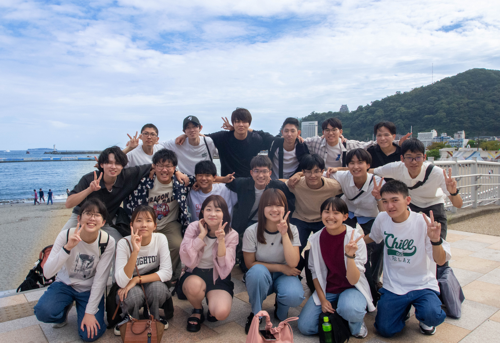
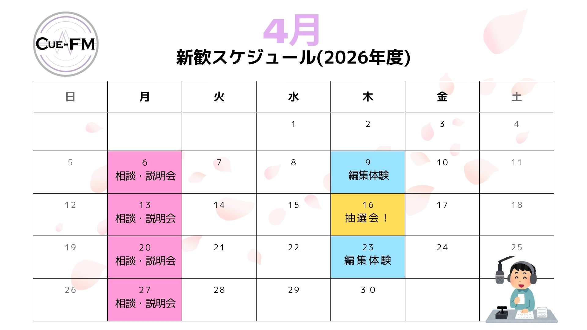

静岡大学 放送研究会
Cue-FM 浜松

新入生大募集中！
一緒にラジオを作りませんか？
Cue-FM浜松では、ラジオの企画から制作まで、学生主体で活動しています。経験は一切問いません。
少しでも興味があれば大歓迎です！
新歓イベント開催中！
場所: 課外活動棟 2階 共用部屋6
時間: 13:30〜18:00
お気軽にご参加ください！

クリックして拡大表示
アクセス
静岡大学 浜松キャンパス 課外活動棟
FM Haro! 「エンカレ！」
推したくなる、 ＃遠州のコト
Cue-FM浜松が作成するラジオ番組「FM Haro! エンカレ!」
明日誰かに話したくなるような地元・遠州の魅力を、学生の目線で発信するラジオ番組です。
放送局: FM Haro! 76.1MHz
放送日時: 毎月 第3・第4木曜 12:15〜12:30